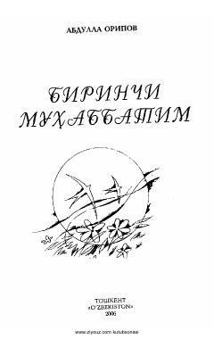

BMO'zbekiston xalq shoiri Abdulla Oripovning sevgi va muhabbat mavzusidagi saralangan she'rlari to'plami.
Ushbu to'plamga O'zbekiston xalq shoiri Abdulla Oripovning turli yillarda sevgi-muhabbat, vafo va sadoqat mavzusida yozgan otashin she'rlari jamlangan. Kitob kitobxonlarga shoirning lirik merosidan bahramand bo'lish imkonini beradi.